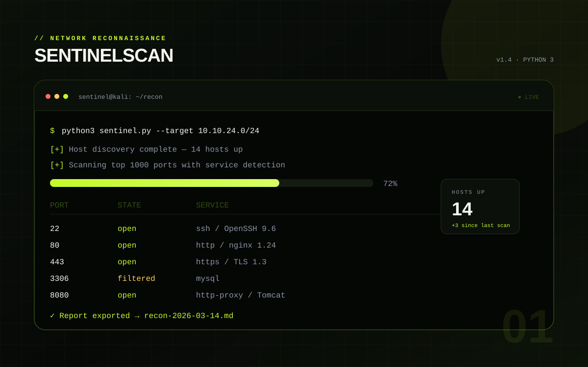

01

Security · Python
2026
SentinelScan
A command-line reconnaissance tool that discovers live hosts, fingerprints open services and writes a clean Markdown report. Built to make my lab notes repeatable instead of manual.
Python
Nmap
Linux
Markdown
Source
Demo: CLI only